Рассмотрим схему:
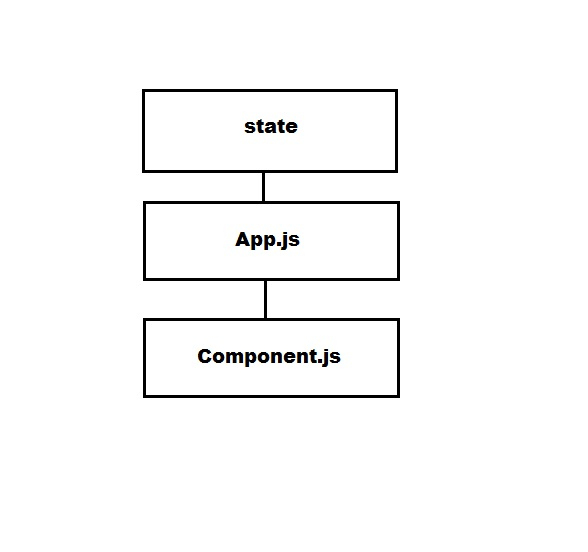У нас есть определенный state (как правило это массив значений, обычно объектов, которые описывают что-то. Например сообщение или комментарий)
Как мы отрисовываем наш state? В качестве props мы прокидываем наш state в App.js? затем так же через props передаем его в компоненту, там мы данные мапим (map) и происходит отрисовка.
Но как нам быть, если нужно в компоненте отредактировать наш state (например добавить сообщение или коммент)?
Для этого нам нужно в файле где создается state создать функцию по изменению этого state и передать эту функцию через props до нашей компоненты. Эта функция должна принимать аргументы, которые будут передаваться в нашей компоненте. Т.е. эта функция будет вызываться в компоненте, но выполняться в том файле где была объявлена.
Рассмотрим пример
У нас есть state. Это Массив объектов с постами:
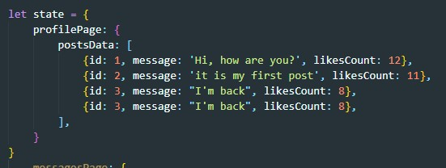Создадим функцию которая будет пушить в массив новый объект
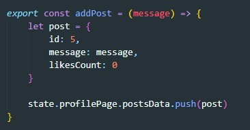Импортируем эту функцию в файле index.js и передадим ее в каччестве props-а компоненте App.js
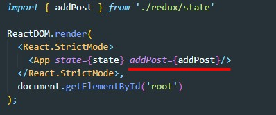После этого, так же через props передаем функцию в копмоненту
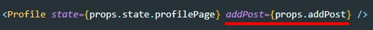В компоненте мы создаем функцию, которая будет вызываться по нажатии на кнопку добавить пост. Вот как выглядит эта функция:
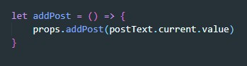Здесь через props мы обращаемся к функции, вызываем ее и на вход даем значение элемента textarea который мы получили через ref. В массив занесено новое значение и state изменен, НО изменения не отрисовались. Потому что функция React render была запущена один только раз при запуске приложения. Это значит что эту функцию нам нужно запускать каждый раз как был изменен state. т.е. эта функция должна запускаться в двух файлах index.js и state.js
Вопрос где должна быть создана эта функция. в файле index.js мы ее создать не можем так как в этом случае нам придется ее импортировать в state.js и тогда будет создана циклическая зависимость (из state мы импортируем в index состояние, а из index в state функцию render). Так делать категорически нельзя. Выход - создать отдельный файл в котором мы объявим функцию renderDom и эту функцию мы импортируем и в index и в state
Мы копируем весь файл index.js и копию переименовываем в render.js
Вот тело этого файла
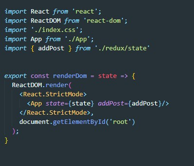Теперь в файле index.js мы удаляем вызов React.render(), импортируем функцию renderDom и вызываем ее. Вот как теперь выглядит index.js
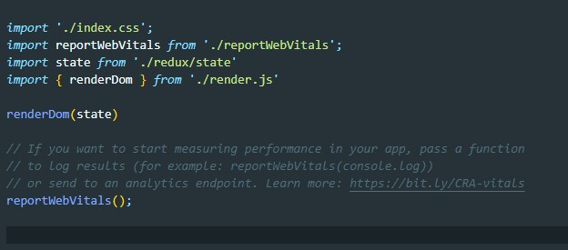Не збываем про то что функция renderDom должна получить в качестве аргумента state
Теперь импортируем нашу функцию renderDom в файл state.js и так же вызываем ее задав на вход state (данные массива) после того как зарушили новые данные. Т.е. еще раз: мы сначала пушим новые данные в массив и затем отрисовываем приложение заново!
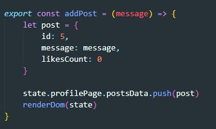Теперь рассмотрим эту же задачу, но уже со state который создан через объект с методами (с ипользованием принципов ООП). Т.е. в файле state.js кроме объекта ничего нет, функция изменения state представлена как метод объекта store. Вот как выглядит теперь файл state.js
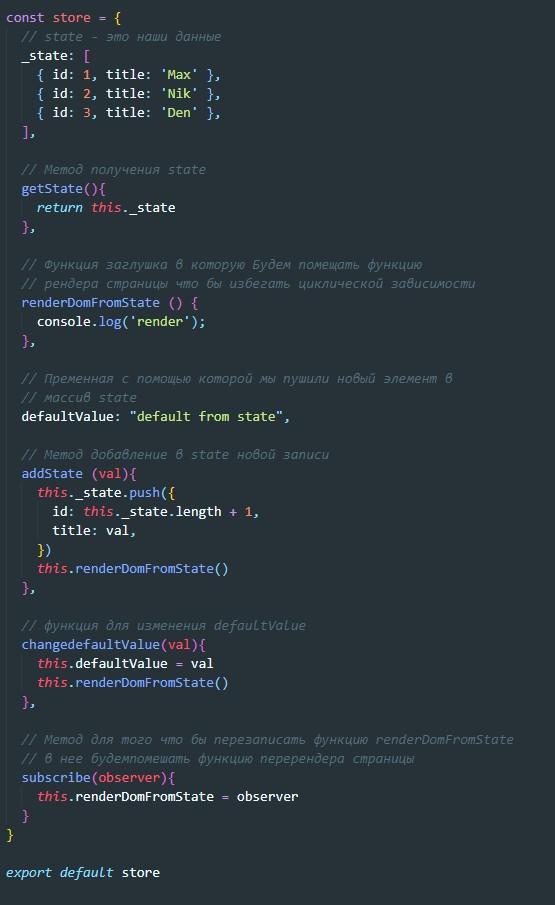На что мы здесь обращаем внимание? Отметим что все функции у нас обращаются к свойствам объекта store через контекст вызова this. Отмечаем это в голове.
Теперь рассмотрим как все стало выглядеть в файле index.js
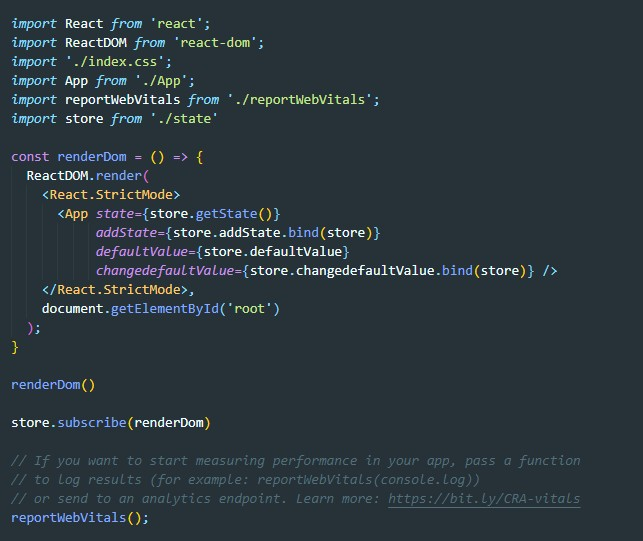Что здесь изменилось? Во-первых, теперь мы везде обращаемся к объекту score. Но больший интерес у нас вызывает вызов компоненты App, то, как мы передаем пропсы, а именно, callback функции. Раньше мы просто передавали функцию не вызывая ее. Теперь, так как мы передаем callback, который является методом объекта (а там, мы поним, что метод использует контекст вызова this), то нам обязательно надо метод забайндить (применить метод bind). Зачем? Посмотрим как этот же метод вызывается в файле List.jsx (это то место куда callback в итоге попадают)
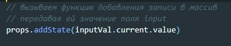На что в этом случае ссылается контекстное слово this? в этом случае оно ссылается не на объект store и на объект props. В результате мы получаем ошибку:
Что бы такого не случалось нам надо передать забайнденный метод и на вход методу bind мы передаем имя объекта store.